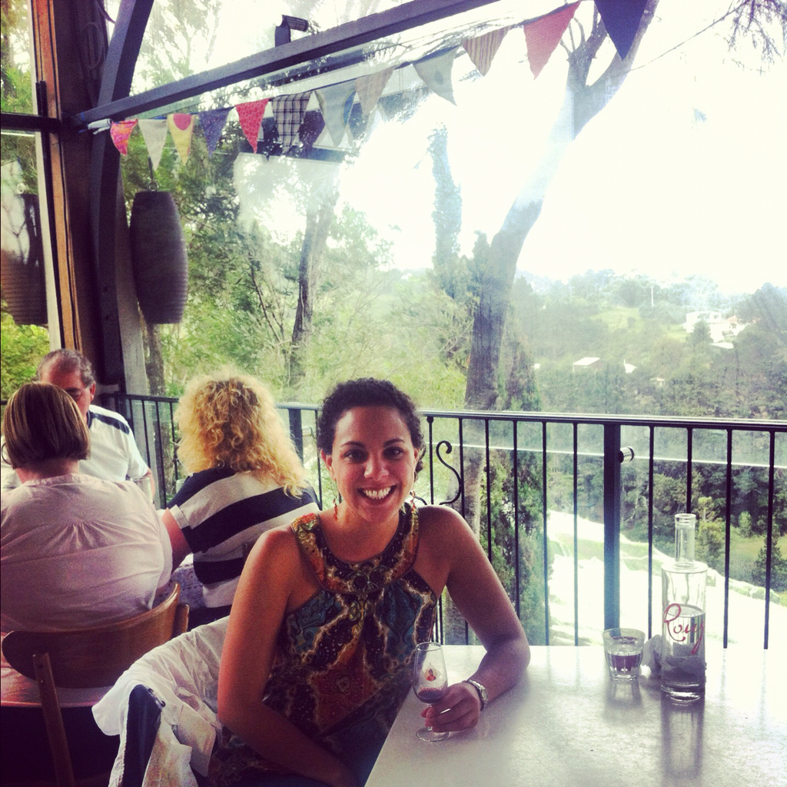

Auckland
I'm sorry, but there's no room in the inn... in ANY inn.
So I decided on Saturday to rearrange my "planned" itinerary and fly into Auckland, New Zealand instead of Christchurch. I'm actually not sure as to why I had picked Christchurch in the first place... Because it's in the middle? Is it in the middle? Which island? Turns out they had a big shaker down in Cc just recently and they're still getting aftershocks. Just like home! I thought... But then actually falling off into the ocean, something that we San Franciscans regularly joke about, didn't sound appealing to me this far from home. Call me crazy but it wasn't the exact sight I particularly had in mind for my four days in the country.
Well. This wasn't the week to pick Auckland either. It seems to be that there is this really old guy (ok not REALLY old) holding concerts, sold out shows if you will (and you will), this week. And last week. For a week and a half. This guy has been concerting for a week and a half! Who has the vocal stamina for such activity?! Especially when you are aged not unlike Keith Richards.
His fans have, coming from what one can assume is all over the world (?!) (it's been a week and a half!), taken up every living hotel room in this place. Hotels, inns, hostels (who am I kidding? I'm not 20.), boutiques, Novotels... Everything. No room in proverbial the inn. Ha! No room in the real inn. Well, I take that back. If I wanted to share my room with 11 other people or my bed with Cimex lectularius (education lesson!), then there were, technically, spots for me. Needless to say, I was ready to rent a car and drive to The Shire (wherever that may be) if necessary.
After hours (not days mind you) of deliberating about the perfect flights, I had finally purchased them late Sunday afternoon. It wasn't until then that I realized we had a slight problem on our hands. I called one place hoping to sweet talk my way into a room but that got me nowhere. Aaaaand I think I called France because the accent was intelligible. Oh great. This did not bode well... Lauren then let me know that the accents from down farther under were all like that, be aware. Well thank you for the heads up, it has since been extremely helpful.
Monday morning I awoke a bit distracted by my latest plight. My flight was in the mid-morning and so I needed to be up and out by 7am. No time to look for anything! It was time to go. I had myself ready to start eating my hair or some weird thing that stress causes you to do when you are verging on losing your mind due to insufferable circumstances. Just kidding. I was just the least bit concerned. I knew it would all work out because it does every time...
And because I have Cameron. CaMERon! (she sings) A friend who passed through church in Foster City a few years back, Cameron is from the fair City of Sails and was Johnny on the spot when I let him know I was coming. Not only did he plan to meet me shortly after my arrival (obvi at a spot TBD), but he set out trying to find me a place to call room for the next four days.
Well, by the time I disembarked Air New Zealand flight 102, I had four recommendations of B&Bs in the area. I rang up a few and landed with Eddie and Marie. The fact that they answered the phone and seemed pleasantly normal placed them directly in my price range. Twenty minutes later, after a ride on the Shuttle Express, I was knocking on their door... And it was merely over an hour since I landed! Miracles do happen. Thank you so much, Cameron. I, and my mother, thank you. Oh! And Lauren 'cause she was a bit nervous, too.
Marie is a sweet lady with a gentle manner who reminded me instantaneously of Debs (except the gentle manner thing). Faconable, classy, and with a perfectly kept home. I told her my situation and why I needed her home so desperately so last minute. She said it was true, that Roger Waters (former front man for Pink Floyd), did have somewhat of a cult following and she wasn't surprised that the city was booked out. Immediately feeling like a complete dolt I agreed that Pink Floyd was, yes, a big deal. No surprises there. Nope. Cult followings... Not unusual at all. Not at all. Totally normal this all was.
I got my tour of her house, any of the three rooms were mine if I wanted them, and landed on the one in front with a bay window looking onto the sweet garden; lots of natural light and cozy as can be. Sigh. "Adventure" success. This house is a perfect blend of classic and contemporary, comfortable in its decor and edgy with its art. Oh! And platinum records - about 15 of 'em. Turns out that Eddie (Rayner) is a music producer and keyboardist from the famed (in New Zealand) band Split Enz and spent some time in a band called Crowded House. Yep, that Crowded House... He's an 80s legend! I asked Cameron about it and he confirmed that Split Enz is to New Zealand what the Beach Boys are to the USA. I just met the Brian Williams of New Zealand! It's cool in a purely existential way... (since I really have no clue who he is). No big deal that he is also framed with SIR Paul McCartney who requested him to play on one of his records. Totally normal this all was...
Anyway, an hour later after I got to freshen up a bit, Cameron came to grab me up and take me to Mexican (it's been three weeks or more!) (and for the record, it's not the Mission here...) and show me around the town. Auckland is spread out like LA and, really should be many cities (in my opinion) as it reaches from about San Jose to San Francisco in length. We drove up Mt. Eden for a panoramic view, took in the sights of High Street, and walked the city to locate some of his favorite spots. After dinner we grabbed a treat in a small, hidden corner street reminiscent of those found in Capri. It was lovely! I felt at home instantly and readily welcomed.
All of this for being in Auckland for six hours. Phew! I'm guessing at that rate, we could pack a lot in to the next few days...
A fRee enTry
It's Day One in New Zealand. I couldn't help but let myself sleep in a bit longer than usual as I had planned a quiet day exploring the city and found no reason to extend extra energy getting up before 8.30... Which is late for me as previously discussed.
I had noted from Monday night where the Auckland Art Gallery was and used my handy Google maps feature on iPhone to locate its exact whereabouts again. I found my way there by noon and was off to explore the softer, and more native, side of the city. Seeing as how I hadn't read of any specific must-see places here in Auckland, and since I don't like to shop while in a new place, this is where I landed!
I was thrilled to finally have an excuse to look through a museum, one of my all time favorite things, so I took my time through the galleries. Art! It was quite the interesting exercise to see the New Zealand take on it. There was one small room for European and American pieces, and an area for contemporary (which I'm loving more and more these days), but the majority of the pieces were reflective of the indigenous aspect of the island and country history. And it was free! Gotta love endowments (right, Pepperdine?)
Following my reunion with culture, I retraced our steps from the night prior and found a small alley that Cameron had mentioned had a few good eateries. Of the four or five, I happened into Vulcan to have a traditional New Zealander meal. Please and thank you I said "traditional New Zealander meal". What did they tell me to order? Eggs Benedict. Uuuhhh surely you'll note that that is served everywhere? Including France where I sincerely believe it's from. Being that my host was of no help, I chose minced beef on Turkish toast as my lunch of choice (mince on toast seems to be a staple as Cameron tells me) and enjoyed it outside in the sunshine.
It worked out that I got to talk to the family, too, via Skype while I was there! This, of course, was the highlight of my day. I didn't really realize I missed home so much until I saw them all around. It was good to see Bear (she was looking so cute and slightly confused), Mark, Suse, Gran, and Mom in real life. Isn't it amazing what technology can do? For free?! All those miles, almost 24 hours time difference, and major underground wavelengths... Not to mention the horrible Internet connection these islands have down here.
Anyway, once we were done with updates and "I love you"s, I headed off home for a brief rest before Cameron swooped me up to show me the beaches of the east coast and expose me to some Burger Fuel dinner.

So beautiful! The landscape of the NZ beaches is rugged and rural and it was calming to walk along the black sand and up above the water on the bluff while surfers tried their best to catch the last of the fading day's waves. With the mist falling low overhead and the green foliage encroaching the pathway, the whole experience fell into the dreamy idea that I had always had in mind regarding what New Zealand would and should be like.
We headed back into town for a delicious dinner, purely Kiwi with a touch of Aussie, and then off to one final lookout on the outskirts of the city to get Auckland in the moonlight from across the water. Stunning! It was like 3D!
One final attempt at updating the blog happened after Cam dropped me off but I was thoroughly pooped and headed to bed. I want so badly to update this so I can share it with you but I'm just having so much fun actually being with people! Somehow I've got myself busier than I thought I'd be...
Wining on Waiheke
I woke up today with rain pattering on my windows. Plans were to head over via the ferry to Waiheke Island, rent a bike, and go wine tasting in one of the islands' premiere growing regions. Not one to easily fall off course or be swayed against what I've already set my mind to, I rearranged my wardrobe choice, swapped flips for moccasins, threw on the rain jacket, and headed out to brave the oncoming downpour.
I got a bit turned around when searching for my bus but somehow found my way, in the now blustering rain, to the ferry terminal. Slightly resembling our main port in San Francisco, the Auckland Ferry Building is a beautiful, old, stone clock tower with little cafés and shops within. Tourist information can be found here as well as any boats going to the outlying islands.
The 40 minute ride over was one of the rockiest I've felt with severe pitching on the outside (Can large vessels such as this capsize?! It guess I can ask Italy...) and soft groaning on the inside. Shortly this turned into mild exclaiming and loud chatter as the bottles in the cooler started falling all over the bar area. Ok. Time to disembark. I'm not kidding, I don't get sick on boats or in cars but I was thisclose to vomiting. Jigger, you would have had the time of your life!
By Waiheke, though, the storms had subsided and the air was quite pleasant. With determination I walked to the car rental company and requested a scooter; 10 minutes later my helmet was fitted and I had successfully signed my life away for $45. Would I fall? I asked. And how do I turn? I inquired. If I find that I can't do it, can I come back for a car? I wondered aloud. Ari assured me that I would be ok... I'd ridden one of these before, right? (Does that one time Mark rode me around the block on theirs count?) Yes! Yes, I have.
Our practice run in the gravel parking lot gave us both pause but we decided trial by fire was best and with my winery map in tow, I was off on my island adventure. Now, this might not be a big deal to some of you but it's really big to me... and I'm just going to say that I'm truly proud of myself. I was scared to death to jump on my yellow stallion and head out into uncharted, winding, and wet territory but I still did it. And I got the hang of it quite quickly. And I loved it. It was another reminder to me that comfortable is always easy but when we jump out of our fear, we can really impress ourselves. And we can see what we've been missing. And we can be GLAD that we don't have to miss it anymore. I believe these small lessons can be applied to the biggest aspects of life. Throw off the bowlines... Remember?
Well for the first 45 minutes, I was too nervous to stop so I just tooled along at a leisurely pace of 30km/h. Ha! Many a car passed me in that time but I didn't mind it and I tried to get as left as possible to get out of their way. Scooting on the left side! Yes, Mark, it is SO fun.
By 12.30, Marie's breakfast was wearing off and I started to think about lunch. I turned (!!) into a tree-lined driveway and headed up to Stoneyridge Winery to see what they were all about. While searching the board for a wine to taste, I met Kelly from Santa Rosa who gave me some tips that she heard about the island. With her information, I decided to skip tasting at Stoneyridge and head directly to lunch at Casita Miró.
Miró was across the island, past Onetangi Beach (the island's largest), and up an ocean drive. The Strand, as the main portion is called, is right at sea level with stunning ocean views. It was great, now that I had the hang of it, to stop every so often and grab shots of the horizon and skyline. What a marvel!
After a steep incline up to Casita Miró, I happily swapped my helmet for a wine glass and settled in for a made to order omelet and their award winning wine flight. I was still there a leisurely hour later and noticed that I had almost run out of time before my boat took off. Reluctantly I took to the road again in the wind and wound my way back to the harbor.
The rental had occurred without incident and I got back with two minutes to spare. On the other side of the water, with thankfully a better ride under our belts, I met up with Natasha Eagle, a dear friend from days gone by. It's probably been about 20 years since they lived in the States and we'd last seen each other. It was wonderful reconnecting and catching up on all that's happened over time... Another random friend blessing from around the world and down!
It took me a while to find the bus I needed to get back to Mt. Eden so I was glad when I finally got back and saw Marie outside picking her flowers. After a brief chat with her and Eddie, she set me up with some evening snacks and then left me to watch some good old fashioned tellie. Aaaahhh it was time for quiet... which was good because tomorrow we need to be IN the city by 7.20a.
Does anyone know what time it is? It's Toor Time!*
That's right. Today... I took an actual tour. I called, I boarded a bus, I put on a sticker, and I hung out with 19 other people from around the world all for an opportunity to see some glowing worms in a freezing cave. And it was freakin' awesome! First off, these folks are cool. I can see why people would be down with this if you stayed together because we were bonding in two hours! They've all been great fun...
Second, I'm not going to recommend going to Auckland (because I just didn't feel it) BUT these Waitomo Caves about two and a half hours outside of the city were amazing. Frankly, outside of the fact that I had an acquaintance (that now I can call full-fledged friend!), they were the main draw to this city. Waiheke was brilliant but the caves were out of this world.
We arrived in Waitomo around 10 this morning and immediately got to head into the caves (one point, Grayline) as they were all ready for us. We were briefed on the stalagmites and stalactites that grew around the cavern (Come sé dice "cave"?) and then were taken by one small flashlight to an awaiting boat. I seriously felt like I was boarding Small World, on my way to see Peter Pan.
With the lights completely out, our guide pushed us out to float while he led the boat by a hardly tangible rope. Meanwhile, you could hear the lightly whispered gasps as around us we saw thousands of tiny, iridescent lights dotting the cave sky. It was London! Just kidding... but it was so similar to that experience only a million times cooler.
Once we had adequately expended our awe at the larvae dripping it's way from the ceiling towards us at it caught mosquitoes in its snare, we silently ascended back into civilization. While others boarded our coach, I snuck down to the gift shop for a postcard because there were no pictures allowed! What's that about!? No matter, theirs were better than mine would've been and there were five on a card! Win and win.
From there we were off to see more of the countryside, enjoy a quick lunch on board, and head to a farm of some sort. Well, except for me. I got to head to the world's first ever Zorb track! Created in New Zealand in 1994, Zorbing is the Kiwi invention that is billed as exciting as bungy jumping (which they also thought up though I didn't find it as purely mortifying...) and something thrill seekers from around the globe come to Rotorua to try their hand at.
I was dropped off in the pouring rain to maneuver the experience myself (mind you, the entire hour leading up to this my stomach was threatening to release my lunch from both ends) and so I walked around to examine the situation. It looked pretty terrifying but, since I'd paid and was already there, I changed into my bathing suit and got ready to ride.
What a THRILL! Lasting what felt like five minutes (though it's just under one), I rolled down the mountain in a silicone ball, surrounded by warm water, sloshing to and fro, up and down, all around; I bounced and rolled and came out on the other end completely soaked. I had forgotten a towel but thankfully someone had left one that I could use and I was back dry and in my warm clothes in no time at all. Another time where I leaped (literally, I had to dive head first into the ball...) and am so glad I did. Highly recommended.
The group came back for me at 2.30 and we were off to downtown Rotorua for a tour of the geological pools and a cultural show. Both were amazing and the highlight was their geyser which happens to be the second largest in the world! And it lasts for 30 minutes! So cool. And no, Old Faithful is not the largest, a Russian geyser holds that title.
By five it was time to board the bus again for our long ride back into Auckland. I've been writing all day and I got no sleep last night as I was all worried that I'd miss my bus this morning. Meanwhile, I have to wake up tomorrow at 3 AM (!!) for a six o'clock flight. With that in mind, I'm heading for a nap.
I'll see you back in Sydney, I promise...
*This header ranked right up there with "I'm On A Bus!" but between the two horribly played title reworks, I somehow thought this to be better. Not sure it was...